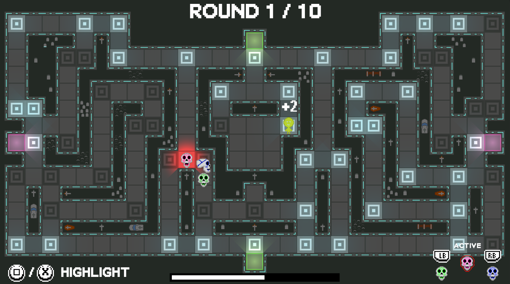
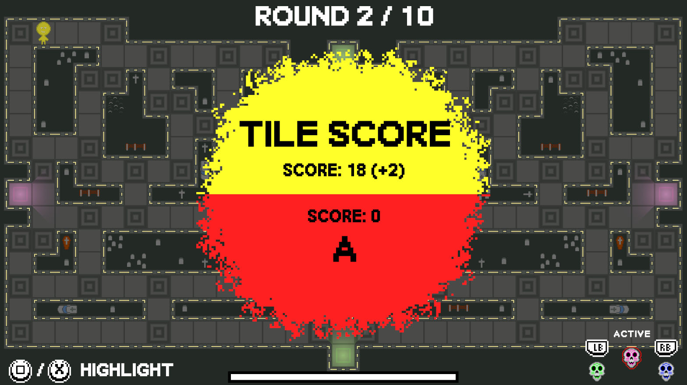
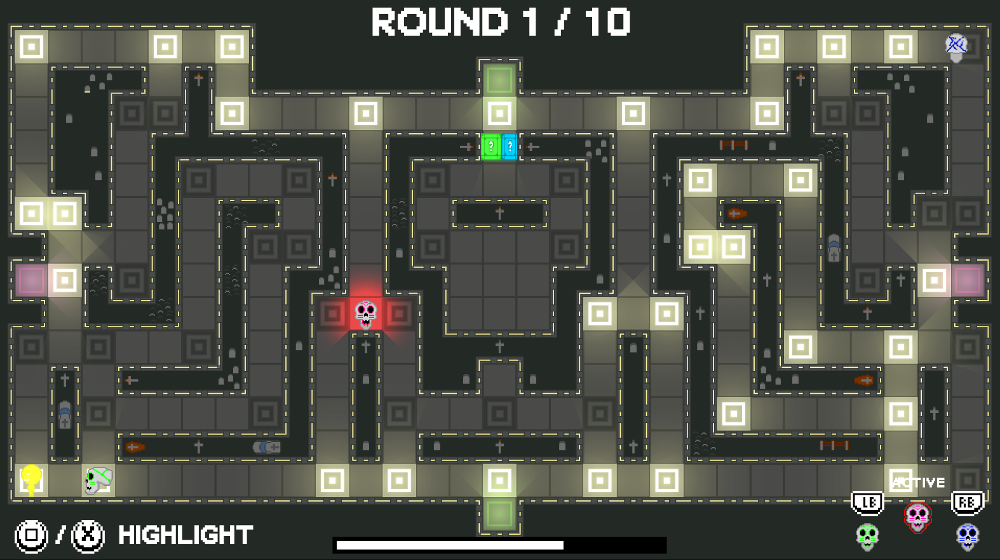
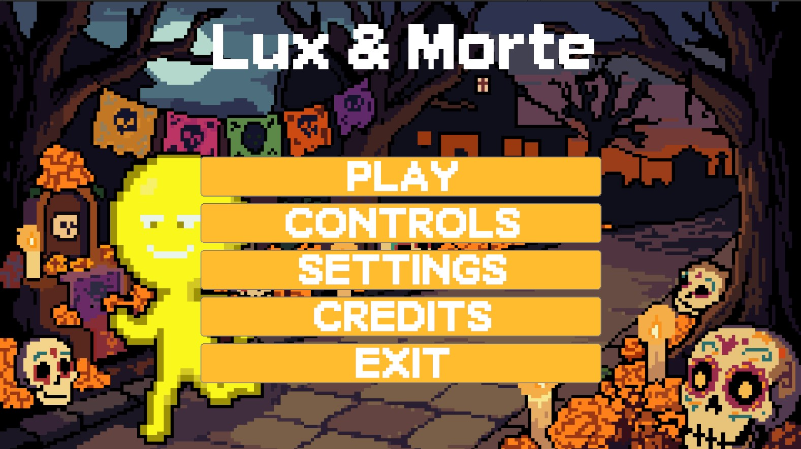
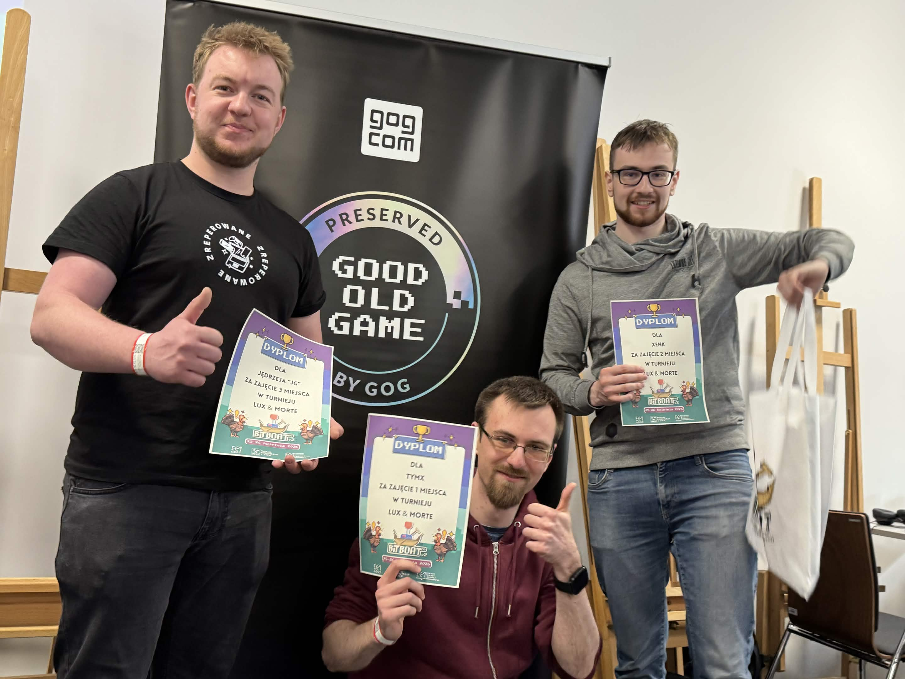
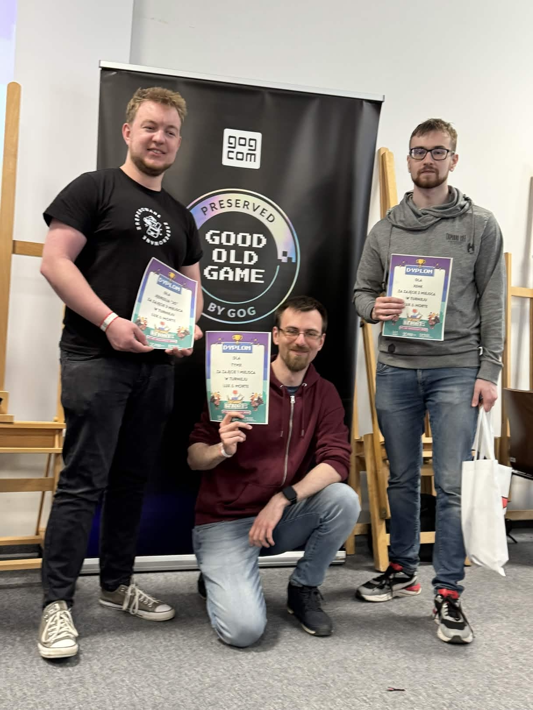
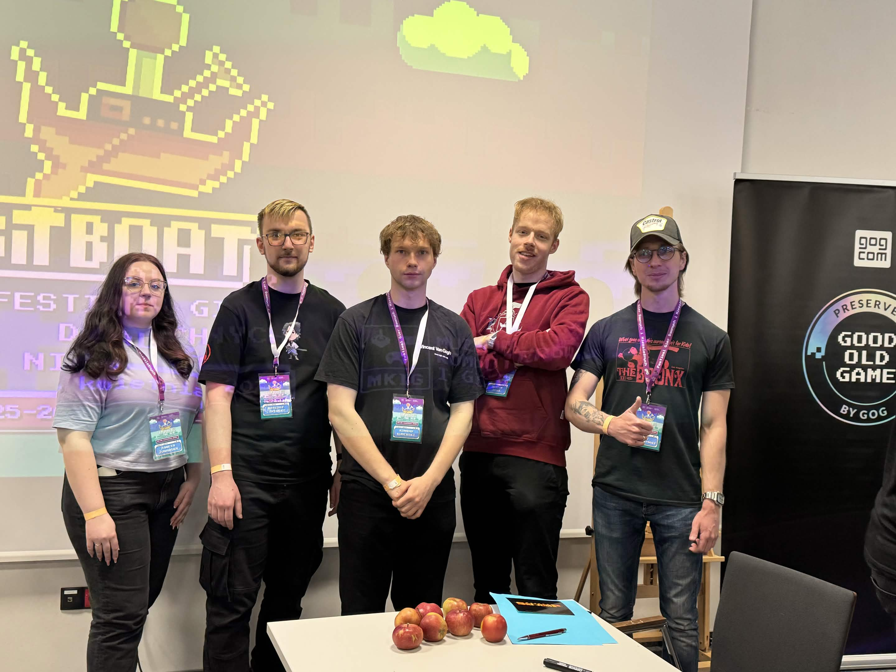
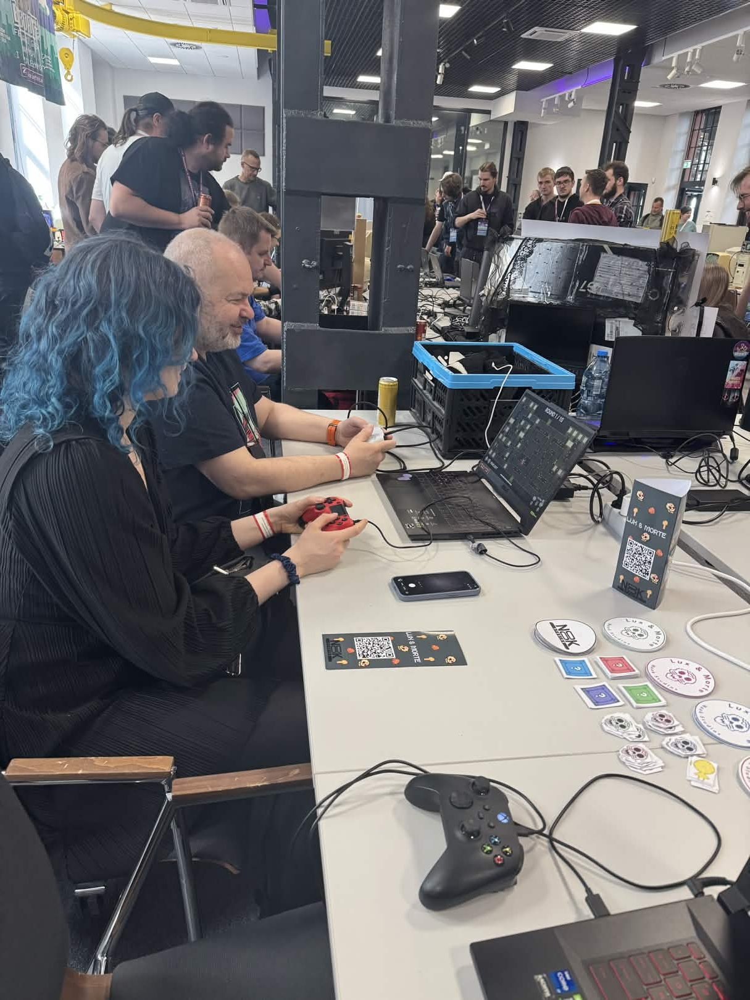
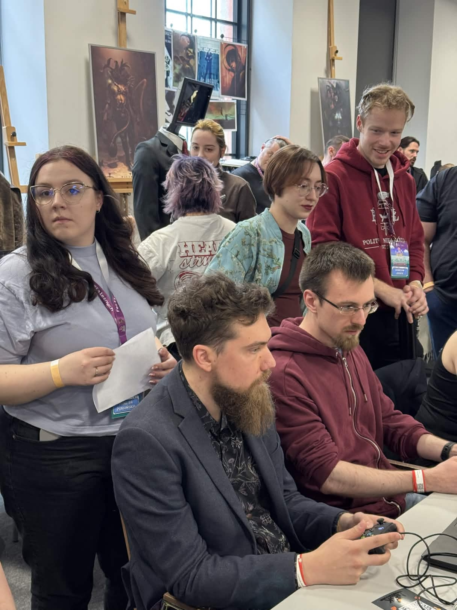
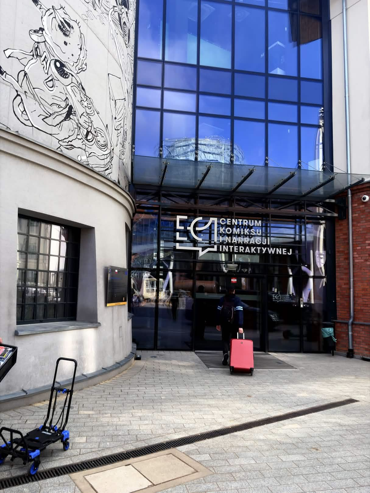

Lux & Morte is a fast-paced, asymmetrical multiplayer party game set in a colorful, symbolic vision of the afterlife. Inspired by Día de los Muertos aesthetics, the game blends vibrant visuals with competitive gameplay focused on local multiplayer interaction.
Two players take on opposing roles: one controls the Light, navigating a dangerous maze in an attempt to survive, while the other commands a horde of hostile skulls, trying to capture the Light player. The gameplay is designed around tension, quick decision-making, and direct player competition.
During development, the project was regularly reviewed during industry evaluation sessions, where it was consulted with professionals and received consistently positive feedback. This iterative process helped refine gameplay mechanics and improve the overall player experience.
The game is designed for local multiplayer using controllers. Two gamepads are required for the full experience, with intuitive controls and on-screen guidance for each player.



The project was developed as part of the course "Fundamentals of Computer Games" at the Lodz University of Technology. It was created in a team environment, focusing on delivering a complete and playable multiplayer experience.
Special thanks for knowledge sharing and mentorship: Aneta Wiśniewska, Rafał Szrajber.
In this project, I worked as both a Team Lead and Gameplay Programmer. As a leader, I was responsible for task distribution, team coordination, and overall development organization, ensuring smooth communication and a consistent workflow across the team.
On the programming side, I focused primarily on core gameplay systems and technical implementation, including:
This role required both technical problem-solving and high-level coordination to ensure the project was delivered in a playable and polished state.
The game was presented during Bit Boat Festival in a live showcase environment. Players had the opportunity to test the game, compete against each other, and experience its mechanics in a real event setting.
We also organized a tournament with sponsored prizes, which significantly increased player engagement and allowed us to observe real user behavior and feedback.






The project will be showcased at Game Access 2026, where it will be presented to a broader audience, including players and industry professionals.
This event provides an opportunity to gather valuable feedback and further validate the gameplay experience in a professional environment.
🔗 Visit Game Access website